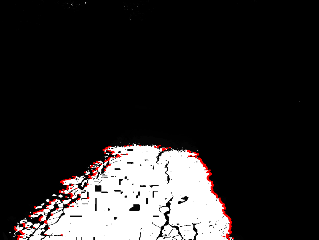

<meta charset="utf-8">
<meta name="viewport" content="width=device-width, initial-scale=1">
<title>ARBot – Detekce kraje vozovky</title>
<link rel="icon" href="../assets/img/arbot-logo.png">
<link rel="preconnect" href="https://fonts.googleapis.com">
<link rel="preconnect" href="https://fonts.gstatic.com" crossorigin>
<link rel="stylesheet" href="https://fonts.googleapis.com/css2?family=Archivo:wght@500;600;700&amp;family=JetBrains+Mono:wght@400;600&amp;family=Newsreader:opsz,wght@6..72,400;6..72,500;6..72,600&amp;display=swap">
<link rel="stylesheet" href="../assets/site.css">
<script>window.MathJax={tex:{inlineMath:[['\\(','\\)']],displayMath:[['$$','$$']],tags:'none'},
  options:{skipHtmlTags:['script','noscript','style','textarea','pre']},
  chtml:{scale:0.95}};</script>
<script id="MathJax-script" async src="https://cdnjs.cloudflare.com/ajax/libs/mathjax/3.2.2/es5/tex-mml-chtml.js"></script>

<header class="sitehead">
  <a class="brand" href="../index.html"><span>ARBot</span></a>
  <nav>
      <a href="../index.html">Úvod</a>
      <a href="../pages/prezentace.html">Jak to funguje</a>
      <a href="../pages/historie.html">Historie</a>
      <a href="../pages/umisteni-v-soutezich.html">Umístění v soutěžích</a>
      <a href="../pages/verze.html">Verze</a>
      <a href="../pages/technicke-clanky.html" class="on">Technické články</a>
      <a href="../pages/kontakt.html">Kontakt</a>
  </nav>
</header>
<main>
  <div class="pagehead">
    <p class="eyebrow">Zpracování obrazu</p>
    <h1>Detekce kraje vozovky</h1>
    <p class="lead">Kde v obraze končí cesta &mdash; hledáno jako maximum jednoduchého kritéria.</p>
  </div>

<section class="first">
  <p>Vyjdeme z jednoduché představy. Pro levý okraj platí, že vlevo od něj není cesta a vpravo
     až ke středu cesta je. Pro pravý okraj platí to samé jen stranově otočené.</p>
  <div class="mathblock">
  $$\begin{align}
  E(x_l) &= \int_0^{x_l} 1 - P(x)\,dx + \int_{x_l}^{x_s} P(x)\,dx \tag{1}
  \end{align}$$
  </div>
  <div class="legend">
    <div><b>\(E(x_l)\)</b><span>kriterium levého kraje vozovky</span></div>
    <div><b>\(P(x)\)</b><span>pravděpodobnost sjízdnosti vozovky</span></div>
    <div><b>\(x_l\)</b><span>levá hranice vozovky</span></div>
    <div><b>\(x_s\)</b><span>střed vozovky</span></div>
  </div>

  <p>Levý kraj vozovky je v místě kde (1) nabývá maxima. Vztah (1) lze dále upravovat pomocí (2).</p>
  <div class="mathblock">
  $$\begin{align}
  \int_0^{x_s} P(x)\,dx &= \int_0^{x_l} P(x)\,dx + \int_{x_l}^{x_s} P(x)\,dx \tag{2}\\
  E(x_l) &= x_l - 2\int_0^{x_l} P(x)\,dx + \int_0^{x_s} P(x)\,dx \tag{3}
  \end{align}$$
  </div>

  <p>Poslední člen vztahu (3) je konstanta a polohu maxima vůbec neovlivní. Stejně tak je možné
     výraz násobit libovolnou konstantou. \(P(x)\) budeme uvažovat typu <span class="mono">uint8</span>.
     V diskrétním případě integrály přejdou na sumy a výpočet je možné udělat iteračně.</p>
  <div class="mathblock">
  $$\begin{align}
  E(0) &= 0 \tag{4}\\
  E(x) &= E(x-1) + 128 - P(x) \tag{5}
  \end{align}$$
  </div>
</section>

<figure>
  
  <figcaption>Výsledek: bíle plocha, kterou obraz vyhodnotil jako cestu, červeně nalezený okraj.</figcaption>
</figure>

<footer>
  <div class="foot-in">
    <span class="mono">ARBOT &middot; AUTONOMNÍ MOBILNÍ ROBOT</span>
    <span>Zdrojový kód, vývojová dokumentace a měření:
      <a href="https://github.com/AlesRuda/ARBot3">github.com/AlesRuda/ARBot3</a></span>
  </div>
</footer>
</main>
